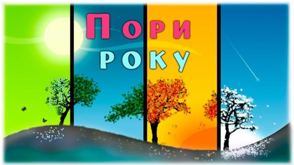

Пора́ ро́ку, сезон (від фр. saison, від лат. satio — сівба, час сівби) — період у річному циклі розвитку природи. У помірному кліматі Північної Півкулі, у тім числі в Україні, розрізняють такі пори року: весна, літо, осінь, зима. Це чотири рівні періоди, на які умовно поділено річний цикл потрапляння сонячних променів на Землю.

Зміна пір року на Землі зумовлена її рухом навколо Сонця та нахилом земної осі до площини *екліптики під кутом 66,5° Для населення помірних широт є звичними певні ритмічні зміни в навколишній природі, які повторюються з року в рік і які називають порами року. Кожному добре знайомі природні ознаки весни, літа, осені, зими; їх легко розрізнити в довкіллі, на фото чи картинах. Пори року впливають на господарську діяльність, планування робочого часу і відпочинку, побут і стан здоров'я.